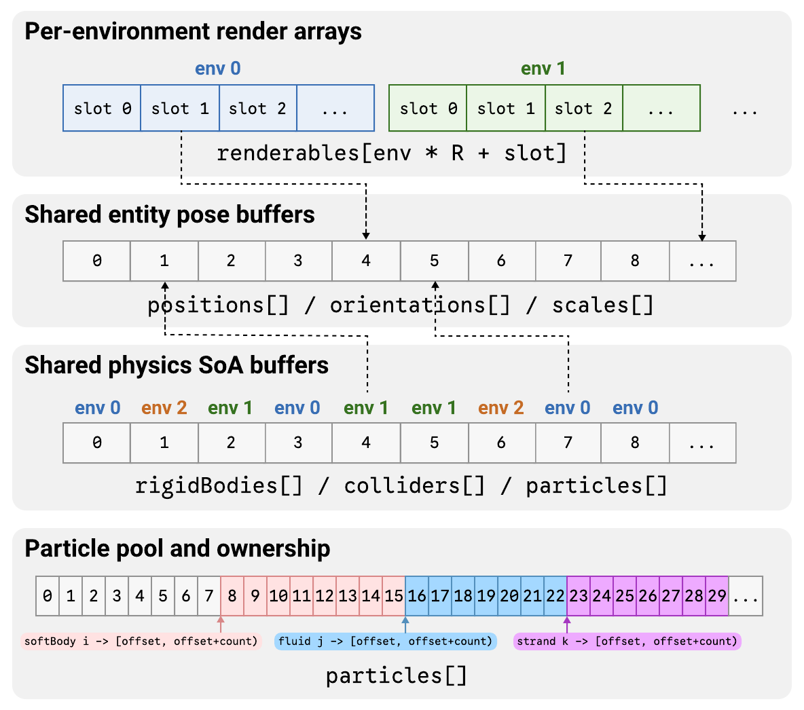

Scene Model and Batching#
Entities and Components#
On the host side, a scene is authored through a unified entity-component world.
An entity is an ID created in a World; components attach the scene data needed
for rendering, physics, and sensing. A TransformComponent provides an
entity’s authored position, orientation, and scale.
Note
“Entity-component” is used descriptively; the implementation is not an ECS.
C++ |
Python |
|---|---|
const auto entity = world.createEntity(envIndex);
TransformComponent transform{};
transform.worldTransform.position = {0.0f, 1.0f, 0.0f};
world.setTransform(entity, transform);
entity = world.create_entity(env_index=env_index)
transform = neo.TransformComponent()
transform.world_transform.position = neo.Float3(0.0, 1.0, 0.0)
world.set_transform(entity, transform)
Entities may also carry mesh renderers, cameras, lights, rigid bodies, colliders, soft bodies, fluids, strands, or ultrasound-related components. Rendering and sensor components are described in Rendering and Sensors, and physics components and constraints are described in Physics and Constraints. After physics is stepped, the rendering and sensor stages use physics-updated GPU pose state.
Batched Environments#
CRESSim-Neo packs multiple environments into one batched scene. The scene-layout descriptor defines the number of environments and per-environment capacities for renderable objects, lights, and cameras. An entity is created with an environment index that determines its simulation and rendering state associated with that environment.
For example, the following configures 64 environments, then creates an entity in environment 17. The capacity values apply to each environment.
RuntimeConfig config{};
config.sceneLayout.envCount = 64;
config.sceneLayout.maxRenderableObjectsPerEnv = 128;
config.sceneLayout.maxLightsPerEnv = 4;
config.sceneLayout.maxCamerasPerEnv = 2;
Runtime runtime;
runtime.initialize(config);
World& world = runtime.getWorld();
const auto entity = world.createEntity(17);
config = neo.RuntimeConfig()
config.scene_layout.env_count = 64
config.scene_layout.max_renderable_objects_per_env = 128
config.scene_layout.max_lights_per_env = 4
config.scene_layout.max_cameras_per_env = 2
runtime = neo.Runtime()
runtime.initialize(config)
world = runtime.world()
entity = world.create_entity(env_index=17)
During prepare() and uploadWorld(), authored state is converted into
GPU-resident scene and physics layouts together with mappings that preserve
entity ownership and environment membership. For renderables, cameras, and
lights, the runtime allocates fixed-capacity per-environment slots. For physics
objects, including rigid bodies, colliders, soft bodies, fluids, and strands,
the runtime stores environment indices and owner-to-buffer mappings rather than
using the same fixed-slot scheme as rendering.
{kind=link}

Batched scene data layout.#
This representation separates shared resources from per-environment state. Mesh, texture, material, and shader resources are shared, while dynamic simulation state, per-environment lighting, camera state, environment fluid and IBL settings, and sensor execution are environment-specific.